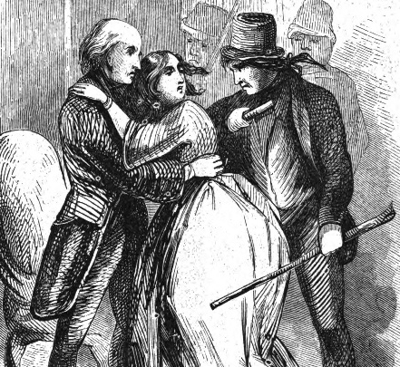
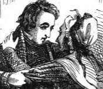
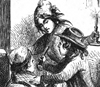

Alison Booth
Clement, Jesse, ed. Noble Deeds of American Women: With Biographical Sketches of Some of the More Prominent. Buffalo: Derby, 1851; 1852; 1854; 1855; 1856; 1857. Rev. ed. Boston: Lee & Shephard, 1851. Auburn, NY: Miller, Orton & Mulligan, 1854; 1855; 1856; 1857. New York: Saxton, 1858; 1861. Boston and New York: Lee, Shephard, 1869; 1873; 1875.
TOC: Mother of Washington; Wife of Washington; Wife of John Adams; Ann H. Judson; Hartford Ladies; Mother Bailey; Elizabeth Heard; Ladies of Philadelphia in 1780; Wife of President Reed; Completion of Bunker Hill Monument; Lydia Darrah; Widow Storey; Mrs. Hendee; Patriotic Women of Old Middlesex; The Cacique’s Noble Daugther; Humane Spirit of a Forest Maid; Hannah Dustin; The Heroines of Bryant’s Station; Mrs. Daviess; A Kentucky Amazon; Dicey Langston; Rebecca Motte; Another Sacrifice for Freedom; A Patriotic Donation; The Little Black-eyed Rebel; The Benevolent Quakeress; A Pioneer in Sunday Schools; The Women of Wyoming; Mary Gould; The Mother of President Polk; Trials of a Patriot; Intrepidy of Mrs. Israel; Incident in Missionary Life; A Kind-hearted Chippewa; Humanity of a Cherokee; Salf-sacrificing Spirit of the Missionary; Daring Exploit of Two Rebels; Elizabeth Martin; The Mother’s Effectual Petition; Noteworthy Integrity; A Faithful Mother; Mrs. Spaulding; Wife of Colonel Thomas; Exemplary Piety; Adventure of a Patriotic Girl; Mrs. Calwdwell and the Tories; Mother of Randolph; Cornelia Beekman; Mother of West; Heroic Endurance; Maternal Heroism; A Modern Dorcas; Sarah Hoffman; Heroism of Scoharie Women; A Sterling Patriot; Heroic Conduct at Monmouth; Courage of a Country Girl; The Ledyards at Fort Griswold; Seneca Heroines; Martha Bratton; A Poor Woman’s Offering; Mother of Jackson; Heroine of Fort Henry; A Benevolent Widow; Anne Fitzhugh; Esther Gaston; Remarkable Presence of a Mind; Wife of Governor Griswold; Bold Exploit of a Young Girl; Susanna Wright; Patriotism of 1770; Mrs. Spaulding; Mrs. Dillard; Phoebe Phillips; Example of a Poor Widow; Elizabeth Estaugh; Kate Moore; Captivity of Mrs. Rowlandson; Mrs. Bozarth; Heroine of Steel Creek; Benevolence of a Colored Woman; Rebecca Edwards; The Beautiful Rebel; Harriet B. Stewart; A Kind and Benevolent Woman; Noble Example of Pioneers; Mrs. Slocumb; Wife of Captain Richardson; Striking Instance of Patience; Susannah Elliott; Anna Elliott; Patriotic Strategem; Influence of a Faithful Teacher; Wife of Thomas Heyward; Noble Decision; A Tennessee Heroine; Mrs. M’Kay; Heroic Conduct of a Daughter; Heroic Decision; Daughter of Aaron Burr; Female Intrepidity; Wife of Richard Shubrick; Retort of Mrs. Ashe; Wife of a Drunkard; Mother of Dr. Dwight; Happy Results of Maternal Fidelity; Mrs. Scott; Success of Boldness; Mary Knight; Wife of William Gray; Mrs. Huntington; Mrs. Biddle; Kindness of Convicts; Margaret Prior; Noble Acts of Kindness; Wife of Dr. Ramsay; Margaret Schuyler; Noble Treatment of Enemies; Humanity Rewarded; Margaret Winthrop; A Pioneer Settler’s Adventure; Mrs. McKenney; The Fisherman’s Heroic Wife; Mrs. James K. Polk; Widow Jenkins; Faithful Little Girl; Hospitality of California Women; Sarah Lanman Smith; Mrs. Borden; Margaret Corbin; Mrs. Channing; Commendable Courage; Heroine of Shell’s Bush; Father Taylor’s Widowed Friend; Revolutionary Mother; Successful Daring; Worthy Example of Forgiveness; Crookshanks saved by a Female; Patriotic Artist; Mohawk Women; Female in the Revolutionary Army; Elizabeth Brant; Brief Anecdotes; Miss D. L. Dix.
See also Pop Chart-
 The Indian Horse Thief
The Indian Horse Thief -
The Colonel and his Daughter
-
West and his Mother
-
The Widow and her Son
-
The Heroic Mother
-
 The Generous Dentist
The Generous Dentist
Search OCLC WorldCat for this title.
Search Google Books for this title.